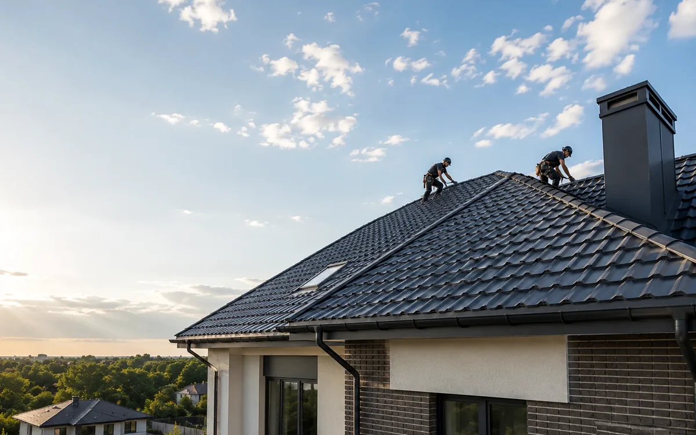

Карниз визначає старт покриття, роботу вентиляції, захист краю даху і правильне потрапляння води в жолоб.
З чого почати
Карнизний вузол покрівлі: чому він важливий починається з огляду конструкції, а не з вибору окремого матеріалу. Важливо оцінити ухил, стан основи, напрям руху води, карнизні зони, проходи через дах і доступ до місця робіт. Таке обстеження допомагає зрозуміти, які рішення будуть доречними саме для цього об’єкта.
Що перевіряють на об’єкті
Під час огляду недостатньо дивитися лише на покриття. Потрібно перевірити основу, мембрани, утеплення, вентиляцію, ендови, примикання та водовідведення.
- форма і ухил даху
- стан деревини та основи
- вентиляція і захист від вологи
- примикання, карнизи і коник
- водовідведення і доступ для обслуговування
Які рішення застосовують
Рішення підбирають під тип будівлі, геометрію даху і режим експлуатації. Для приватного будинку часто важливі тиша, акуратний вигляд і стабільна робота підпокрівельного простору. Для господарських або комерційних об’єктів більше значення мають довжина скатів, кріплення, доступ до обладнання і водовідведення.
Помилки, яких краще уникати
Проблеми часто починаються ще до укладання покриття. Непідготовлена основа, слабка вентиляція або неправильне кріплення знижують надійність системи.
Що підготувати перед роботами
Чим більше вихідних даних, тим точніша первинна оцінка. Корисні фотографії скатів, карнизів, водостоку та підпокрівельного простору.
Поширені запитання
Чи можна прийняти рішення тільки за фото?
За фотографіями можна оцінити геометрію та видимі пошкодження. Стан основи й прихованих вузлів перевіряють на об’єкті.
Що важливіше, матеріал чи монтаж?
Навіть відповідне покриття потребує правильної основи, вентиляції та акуратно виконаних вузлів.
Матеріал перевірено на основі практики з 2017 року
METROPLEX працює у сфері малоповерхового будівництва, проєктування та покрівельних рішень. У матеріалі описані загальні принципи. Остаточне рішення приймається після аналізу конструкції конкретного об’єкта.